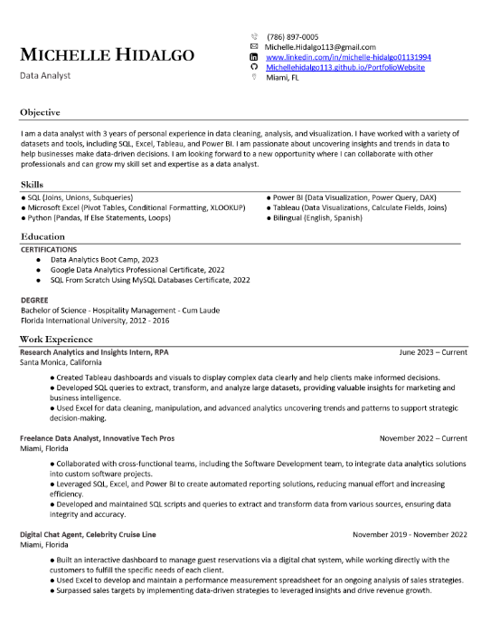

Hi, I'm Michelle Hidalgo, a data analytics enthusiast from Miami, Florida. I have a bachelor’s degree in Hospitality Management from Florida International University and over 3 years of experience in the Hospitality industry.
My passion for data and analytics led me to expand my skills through coursework and online resources. I earned a Google Data Analytics Professional Certificate and a SQL From Scratch Using MySQL Databases Certificate, providing me with a strong foundation in data analysis and database management.
As a motivated and results-driven professional, I'm excited to take on a new challenge as a Data Analyst. With great communication and interpersonal skills, along with attention to detail and problem-solving abilities, I can extract insights and create actionable recommendations from complex datasets. I excel in using SQL, Excel, Tableau, and Power BI to transform data into meaningful visuals and reports that drive informed decision-making.
I'm enthusiastic about contributing my analytical expertise, passion for data-driven insights, and commitment to personal growth in the field of data analytics.
LinkedIn

This data visualization will allow you to discover the "Scott Foster Effect", which allows you to compare the winning percentages of NBA teams when officiated by legendary NBA official Scott Foster (AKA The Extender). You will be able to compare each team's performance against each other under Foster's watch, and explore the impact of his unique style on game outcomes.

My Tableau project assists individuals looking to invest in Airbnb rental properties in Seattle. Through data analysis and interactive dashboards, I provide insights on the best location and property type (based on bedroom count) for maximizing rental returns.

Using MySQL, I performed data cleaning techniques on a Housing Market dataset.
Using a data sample of a fictitious department's employee information, I used powerful features in Excel such as pivot tables, XLOOKUP, and other calculations to showcase data in a way that can assist the company in making informed decisions regarding salaries and bonuses.

For this project, I put together visualizations using Power BI regarding viewership and ad costs for the Superbowl Halftime Show.

Does hosting the Olympics guarantee you a higher medal count? In this project, I compared three countries that have hosted the Olympics at least two times. By using PowerBI, I compared each year these countries hosted the Olympics with the total medal count they recieved those years.

Summary of my career, qualifications, and education.

Here you will find my Google Data Analytics Professional Cerificate as well as my Completed SQL Bootcamp Certificate from Udemy.

{kind=link}
.png){kind=link}